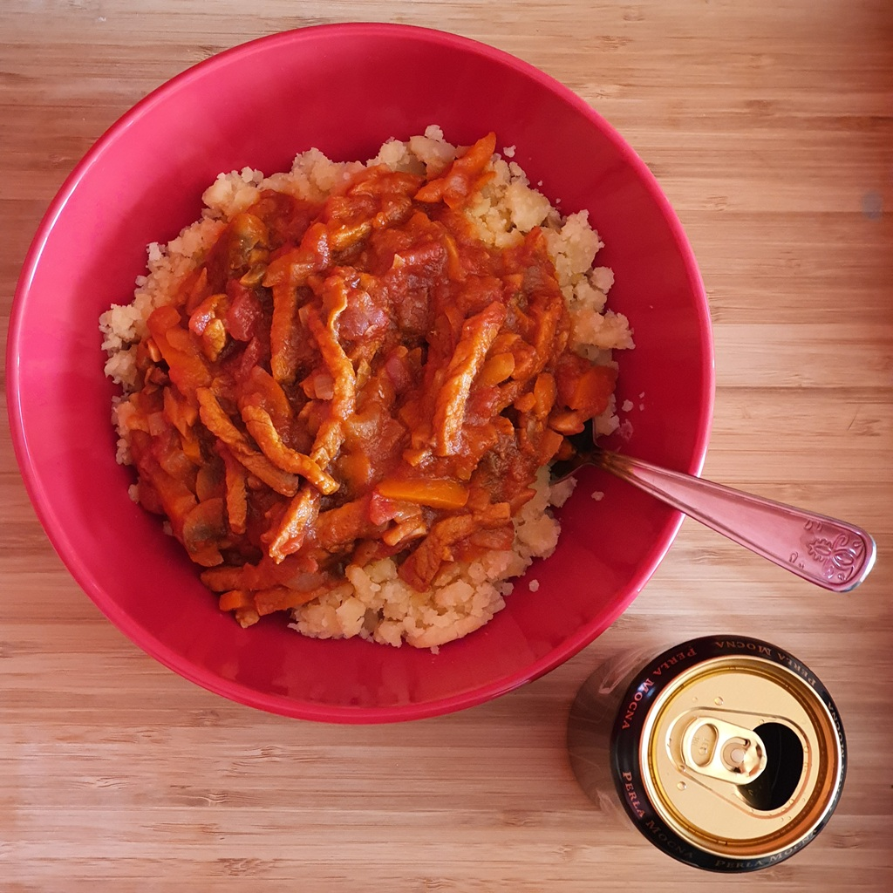
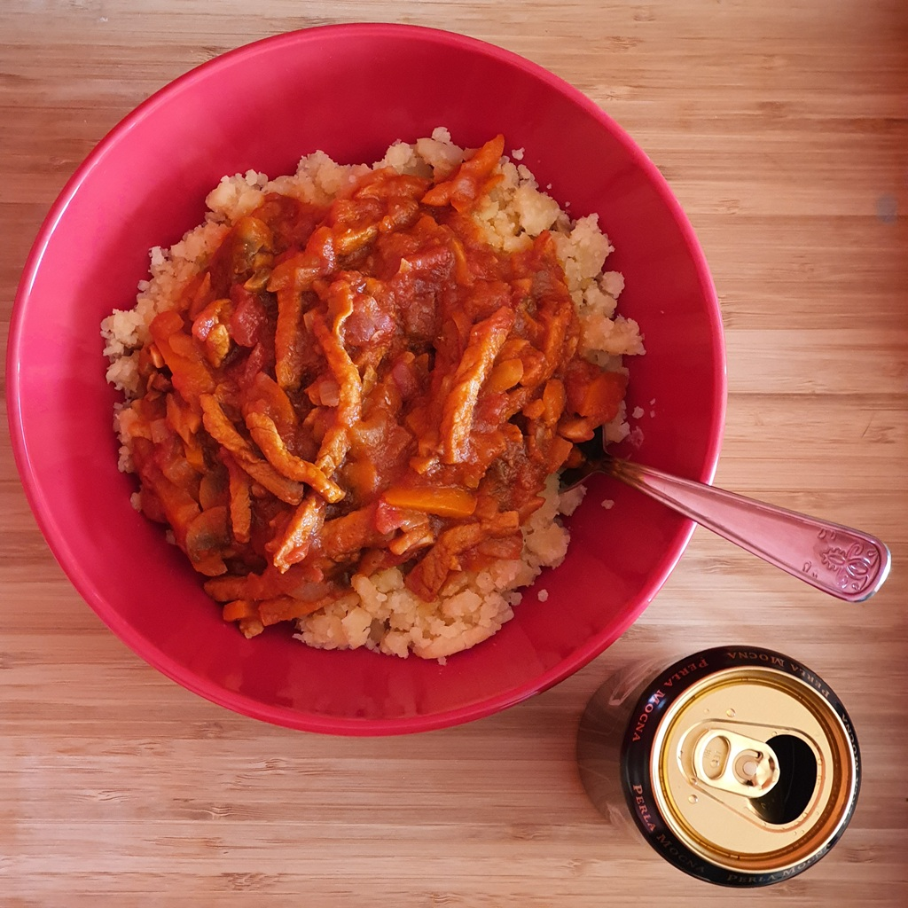

Skład:
- 400g schabu;
- łyżka mąki;
- łyżka oleju;
- sól i pieprz;
- papryka słodka i wędzona;
- majeranek;
- 1 cebula (biała lub czerwona)
- 2 ząbki czosnku;
- 2 czerwone papryki;
- puszka pomidorów;
- 250g pieczarek;
- 3 ogórki konserwowe/kiszone (opcjonalnie)
Przygotowanie:
Schab umyj, osusz. Pokrój w plastry a następnie w paski. Przypraw solą, pieprzem, łyżeczką papryki wędzonej i majerankiem. Oprósz schab mąką. Rozgrzej tłuszcz na patelni. Smaż schab z każdej strony do czasu aż mięso się zarumieni. Zdejmij mięso z garnka i dodaj pokrojoną w piórka cebule. Następnie dodaj czosnek przeciśnięty przez praskę oraz pokrojoną w paski paprykę, smaż chwilę. Następnie dodaj pieczarki i ogórki konserwowe pokrojone w plasterki oraz pomidory. Gotuj następne 20-30 minut do czasu aż schab i warzywa zmiękną.
Zdjęcia:
 
